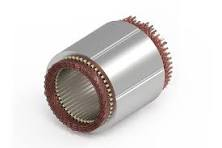
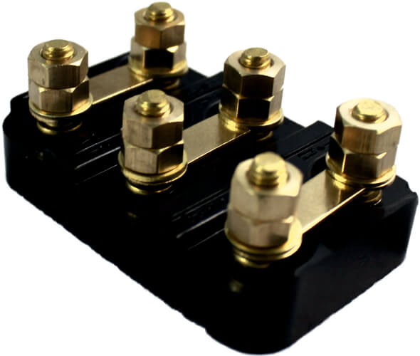
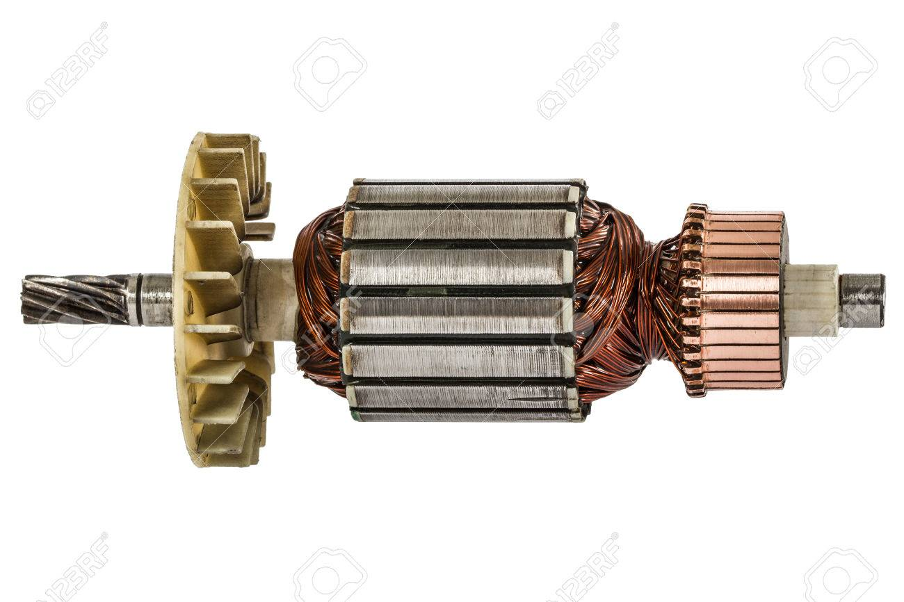

| Parte |
Descripción |
Imagen |
| Estátor |
El estátor es la parte fija del motor de combustión eléctrica. Consiste en una serie de bobinas de alambre de cobre enrolladas alrededor de un núcleo ferromagnético. Cuando se induce corriente eléctrica en estas bobinas, se genera un campo magnético estacionario que interactúa con el rotor, causando su movimiento. |
 |
| Placa de bornes |
La placa de bornes es una pieza metálica donde se conectan los cables eléctricos que suministran la corriente al motor. Es un punto crucial para la conexión segura y estable del sistema eléctrico del motor, permitiendo una distribución eficiente de la energía. |
 |
| Rotor |
El rotor es la parte móvil del motor de combustión eléctrica. Está conectado al eje central y gira dentro del estátor. Cuando se induce corriente en el estátor, el campo magnético generado hace que el rotor gire, convirtiendo la energía eléctrica en movimiento mecánico. |
 |
| Rodamientos |
Los rodamientos son elementos cruciales que permiten el movimiento suave y controlado del eje y el rotor del motor de combustión eléctrica. Están diseñados para reducir la fricción y soportar cargas tanto radiales como axiales, asegurando un funcionamiento eficiente y duradero del motor. |
.jpg) |
| Eje |
El eje es una pieza central del motor de combustión eléctrica que conecta el rotor con otras partes del motor o con dispositivos externos. Transmite el movimiento generado por el rotor a otros componentes del sistema, permitiendo su funcionamiento coordinado y eficaz. |
.jpg) |
| Bobinado |
El bobinado consiste en un conjunto de bobinas de alambre de cobre que se encuentran en el estátor del motor de combustión eléctrica. Estas bobinas generan el campo magnético necesario para la operación del motor cuando se induce corriente eléctrica en ellas. La disposición y el diseño del bobinado afectan directamente el rendimiento y la eficiencia del motor. |
.jpg) |
| Ventilador |
El ventilador es un componente que ayuda a enfriar el motor de combustión eléctrica durante su funcionamiento. Ayuda a disipar el calor generado por la fricción y el funcionamiento del motor, asegurando que las temperaturas se mantengan dentro de los límites seguros y optimizando así su rendimiento y durabilidad. |
.jpg) |